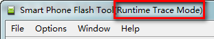
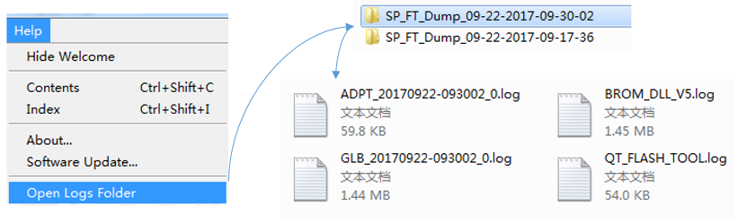
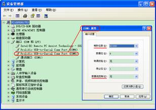
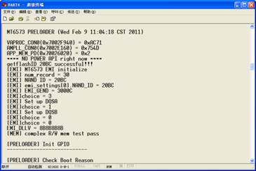
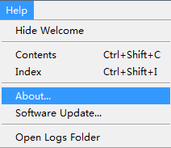
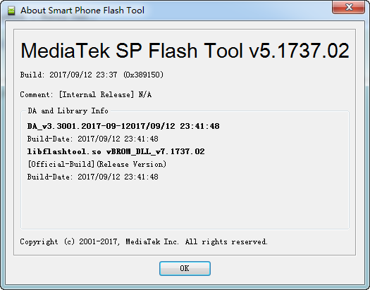

Runtime Trace (Debug) Log
�� PC side logs
Smart Phone Flash Tool offers a
Runtime Trace mode for debugging purposes. In Runtime Trace mode, a detailed debug logs are generated, and stored in
"QT_FLASH_TOOL.log",
"BROM_DLL_V5.log",
"ADPT_20170912-152230_0.log"(format: ADPT_%Y%m%d-%H%M%S_%N.log),
"GLB_20170912-152232_0.log"(format: GLB_%Y%m%d-%H%M%S_%N.log).
These files could be sent to MediaTek for error analysis.
To enter Runtime Trace mode, press ctrl+alt+ M. The Runtime Trace mode status is indicated in the title bar of the application window.

To exit Runtime Trace mode, press ctrl+alt+M again to disable debugging.
�� PC side logs location
Locate the logs folder by Help �� Open Logs Folder

�� Target Side Download Log
Pre-Loader will print log related download via UART4. User could follow the following steps to catch target log of Android
�� Power off the target
�� Plug in the UART4 cable to PC
�� Create a new connection from the ��Hyper Terminal��
�� Set the COM port related to the UART4 cable
�� Set the ��Baud rate�� to ��921600�� and ��Stream control�� to null
�� Execute SP Flash Tool
�� Power on the target


�� SP Flash Tool Version
To obtain the version of Smart Phone Flash Tool, click Help �� About... A dialog box with version information appears.

